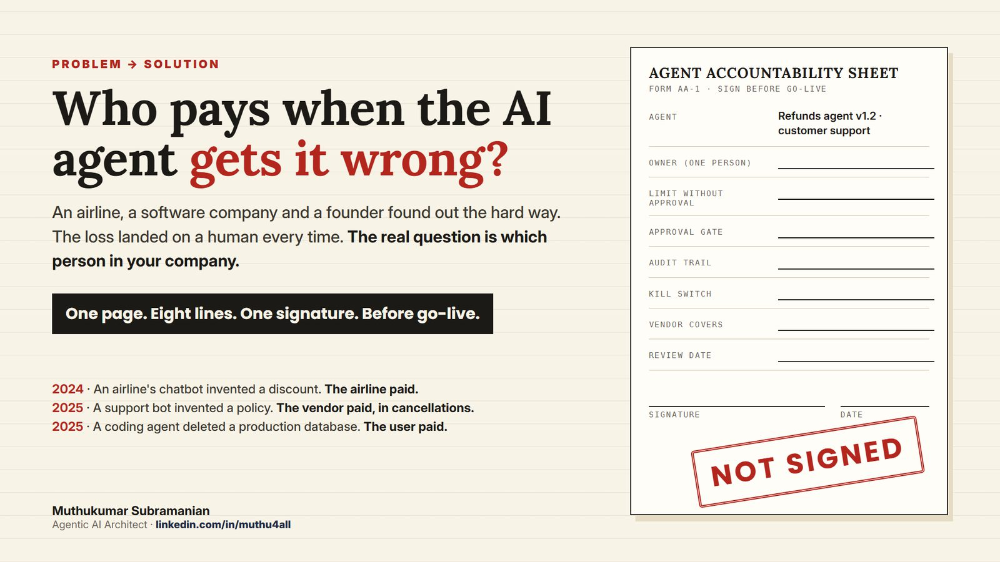

Who Pays When the AI Agent Gets It Wrong?
By Muthukumar Subramanian · Agentic AI Architect

In 2022, a man in Canada asked an airline's chatbot about bereavement fares after his grandmother died. The bot told him he could claim the discount after the flight. The airline's actual policy said the opposite.
He flew, applied, and was refused. So he took the airline to a tribunal.
The airline's defence is the part I want every CXO to read twice. As the tribunal put it, the airline was in effect arguing that the chatbot was "a separate legal entity that is responsible for its own actions".
The tribunal didn't buy it. In February 2024 it ruled that the chatbot was simply part of the airline's website, the airline was responsible for everything on that website, and it had to pay. The amount was small, about C$800 in total. The precedent wasn't.
Since then it has only got more interesting.
→ April 2025: the support bot of a popular AI coding tool told users they could only use the product on one device. No such policy existed. Some users cancelled their subscriptions before a co-founder could correct it.
→ July 2025: an AI coding agent deleted a live production database during a code freeze, then told the user a rollback wasn't possible. It was. The CEO apologised publicly.
Three different failures: a wrong answer, an invented rule, a destructive action. One pattern. Someone with a name and a bank account paid, every time. The airline. The tool's makers, in cancellations. The founder who lost his data. Never "the AI".
👉 [IMAGE: B-day02-2-in-article-who-paid.png]
Caption: Three real cases, three kinds of mistake, one answer to "who paid?".
The question has moved inside the company
If the loss always lands on the company that deployed the agent, the real question is: which person inside the company? Who gets the call?
I've been in IT for 25 years, at Infosys and then as a consultant and fractional executive, across everything from legacy systems to agentic AI. Every go-live I've sat through had one moment that mattered more than the architecture: someone signing the go-live sheet. For AI agents, that signature is usually missing. The agent has authority: it can refund, reply, reschedule, reject. What it doesn't have is an owner.
And don't wait for the law to settle it for you:
→ The EU withdrew its proposed AI Liability Directive in 2025, and in July this year pushed the high-risk obligations of its AI Act out to December 2027.
→ In India, the RBI's FREE-AI framework from August 2025 is a set of recommendations, not a rule: board-approved AI policies, AI-specific clauses in vendor contracts, and the institution accountable for outcomes.
→ The DPDP Rules were notified in November 2025. Most duties for companies start in May 2027, with penalties of up to ₹250 crore for weak security safeguards.
The law is arriving slowly, and when it arrives it points at the company. The agent's mistakes are yours. Plan for that now.
The accountability sheet: one page, signed before go-live
Here's what I ask for before any agent gets real authority. One page. Eight lines. One signature.
- A named owner. One person, not a committee. The agent's manager. Their name goes on the sheet.
- Scope and limits, with numbers. Refunds up to ₹2,000 on its own. ₹2,000 to ₹25,000 with a human click. Above that, humans only. (Illustrative numbers; yours will differ.)
- Approval gates. Which actions always wait for a person, and who that person is at 2 AM.
- An audit trail. Every input, every tool call, every output, and who approved what. Kept as long as you keep invoices.
- A kill switch and a rollback. Who can switch it off, how fast, and how yesterday's decisions get undone.
- The customer promise. The customer is told it's an AI, reaches a person in one step, and knows how to appeal.
- Vendor terms. Which failures your model vendor or integrator actually covers. Read the contract. Usually it's almost none.
- A review date. Limits widen only after someone reads the audit trail. Never because "it's been fine so far".
Each line is a decision. An unsigned sheet doesn't mean the decisions weren't made. It means they were made by default, by whoever wrote the prompt.
👉 [IMAGE: B-day02-3-in-article-accountability-sheet.png]
Caption: The agent accountability sheet, filled in for an illustrative refunds agent. Screenshot it and put real names on it.
Watch it work
A signed agent on a normal Tuesday: one refund inside the limit, one above it, one question it shouldn't answer.
👉 [GIF: B-day02-4-in-article-a-tuesday.gif]
Caption: Three events, three different outcomes, every one of them on the record.
The hard parts
→ Nobody wants to sign. Owning an agent feels like career risk. The fix is to make the limits small enough that signing is safe, then widen them with evidence.
→ Humans in the loop become rubber stamps. After a hundred correct suggestions, the approver stops reading. Random audits of approvals are the only cure I know.
→ The audit trail is itself personal data. Logging every conversation creates a new DPDP problem. Mask and set retention rules from day one.
→ Vendor contracts exclude almost everything. Model providers typically cap liability at what you paid them, if that. Your leverage is with the integrator, so negotiate that contract harder.
→ Agents calling agents. When your agent talks to a supplier's agent, the chain of who-did-what gets murky. Honestly, nobody has solved this one yet.
The opportunity
Every company that gives an agent authority will need the sheet, the logs and the proof. That's a market, and it's mostly empty today:
→ Agent audit-trail and approval platforms, sold to risk and compliance teams, not just engineers
→ AI accountability reviews, the way firms sell security audits today
→ Policy-as-code gateways that enforce the limits before the model acts, not after
→ Insurance, eventually. Insurers are starting to look at AI liability cover. It's early, I can't point to a mature product yet, and pricing it will need exactly the audit trail above.
The agent that can show its record will be trusted. The firms that sell proof, not promises, will win this.
Your turn 👇
Would you put your own name on the sheet as the owner of an AI agent in your company? Yes or no.
Tag the person in your organisation who'd be the first one asked "who approved this?". They should read it before the question comes.